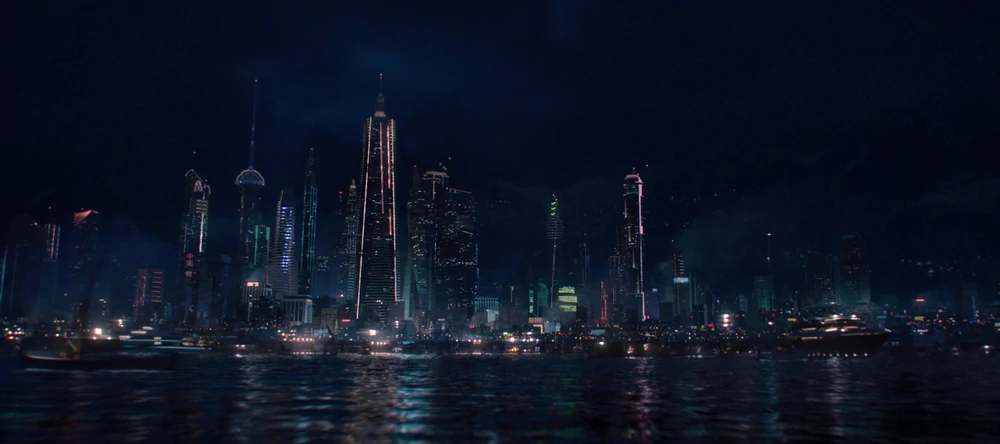
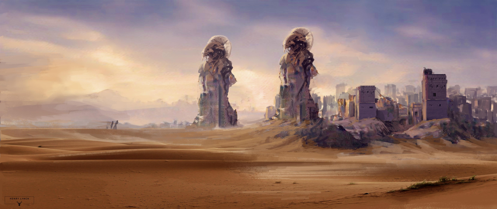

The Story
Many years ago, four ancient civilizations ruled the Minecraft world:
Ke Kaí
The ocean region. A once technologically advanced trade-based society that controlled trade routes on and below the waves. These people only ate kelp as they believed eating fish was taboo. As such, they eventually descended into madness and some say there are still remnant factions living in caves on the ocean floor.
Snæbjörn
The snow region. High in the icy mountains, a society dedicated to the advancement of medicine and knowledge. Many botanists inhabited the region, coaxing exotic plants to grow in harsh conditions. Historians far and wide regard the lost ancient library of Snæbjörn to be the most authoritative and complete in the known world.
Fornaxia
The desert region. Hidden in the sands of the largest deserts, the Fornaxians built an extensive empire around their import/export of terrestrial goods. Comprised of a number of bazaars and trading posts, the Fornaxian accords loosely bound the seven mercantile Families into cooperation. Ancient trade manifests reveal excitement over a previously unknown fossilized substance discovered by sounding equipment deep below the Capital trade city. A great deal of Fornaxian resources were allocated to the discovery of a process of breaking through the bedrock layer, safe transportation over the Void, and extraction of this substance. It is unclear what exactly this substance was, but its discovery coincides with the beginning of the civilization's downfall.
Aetheria

The sky region. With its capital city of Icaria, the Aetherians were the first people to breach the overworld dimension by creating portals that connected our world with the Nether and End beyond. Building high above the ground through the use of Ender technology, they quickly used the technological superiority to amass an army and impose their will wherever they chose.
These kingdoms ruled for thousands of years until one by one they collapsed into the sands of time. Years later, a deadly virus emerged. It quickly spread to even the most isolated communities, wiping out millenia of progress and achievement. Survivors of this global pandemic roam the ruins of these ancient cities seeking refuge from the mutated creatures (I mean GIANT BEES? Who has ever seen bees as big as your head?) while attempting to piece together the rare fragments of the past.
Some survivors claim to hear radio signals, repeating a glimmer of hope through the static. “Jonasville safe. Rebuilding together.” Who is broadcasting these mysterious signals with a seemingly limitless range? Why have these ancient civilizations been reduced to crumbling ruins? And who is the mysterious figure known only as “Sheriff” who has the entire town pledging their unwavering loyalty?